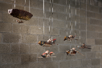

作品名稱
尋找秘密花園 Looking for a Secret Garden
作者
唐壽南Tang Shou-nan
年代
2020
尺寸
鳥形飛行器（單件） 長46cm 寬23cm 高13cm 花 長30cm 寬30cm 高40cm （6件一組）
作品說明
五件鳥行飛行器加上一件植物造型。內容情境作品帶著鏽蝕斑剝的痕跡呈現出金屬質感，藉此表現時間旅程留下的痕跡。 內容情境：描述一組飛行小組為了尋找象徵烏托邦的秘密花園旅程